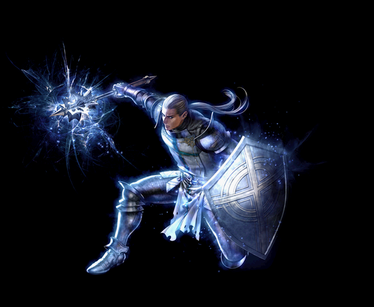
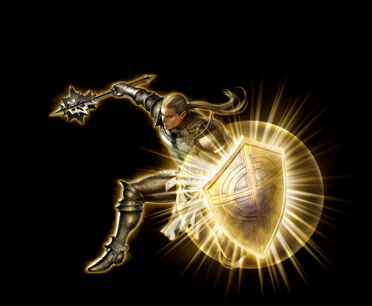
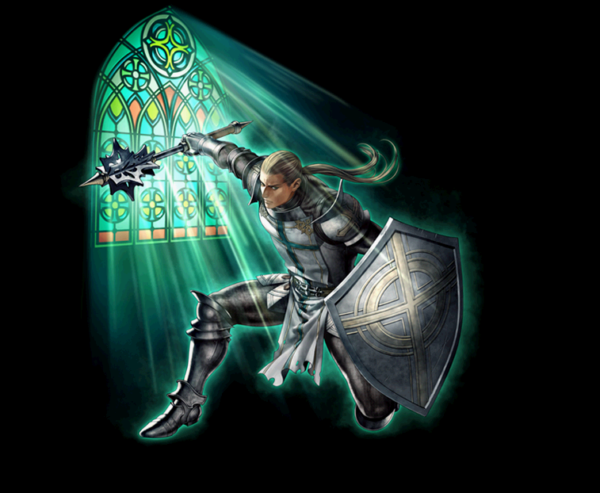

2012～ ビショップ 覚醒スキル一覧
2018/12/18 ビショップスキル改変前のデータ。
改変後は、2018/12/18バランスパッチ反映版を参考にしてください。
ディバインエクソシスト
セイクリッドディフェンダー
グロリアスエイダー
ディバインエクソシスト
| ディバインエクソシスト | |||||||
|---|---|---|---|---|---|---|---|
|  | |||||||
| [専用パッシブ] 神聖盾術 | |||||||
| スキル説明 |
本人の防御力より弱い攻撃をブロックする場合、硬直しない。 |
||||||
| スキル効果 |
条件によってブロックモーション無効 |
||||||
 |
[専用覚醒スキル] エクソシズムリチュアル | |||||||
|---|---|---|---|---|---|---|---|---|
| スキル難易度 | 3 | |||||||
| 必要スキル | エクソシズムエンカウンター[50] |
|||||||
| スキル説明 | 悪を浄化する攻撃を放つ。二度目の打撃が範囲内の敵を全て攻撃。アンデッド系と悪魔系にクリティカルヒットが発生する確率が向上。 | |||||||
| レベル | 0 | 1 | 2 | 3 | 4 | 5 | ... | 50 |
| 消費CP | 125 | 127 | 129 | 131 | 133 | 135 | ... | 225 |
| 獲得CP | 135 | 137.5 | 140 | 142.5 | 145 | 147.5 | ... | 260 |
| 物理ダメージ（％） | 315 | 321 | 327 | 333 | 339 | 345 | ... | 615 |
| 命中率補正値（％） | 7.5 | 7.65 | 7.8 | 7.95 | 8.1 | 8.25 | ... | 15 |
| アンデッド悪魔クリティカル確率（％） | 100% | |||||||
| 攻撃範囲半径（m） | 2メートル | |||||||
| 備考 | 既存の2連打攻撃のうち、1発が範囲攻撃になる | |||||||
 |
ソーンシャタリング | |||||||
|---|---|---|---|---|---|---|---|---|
| スキル難易度 | 2 | |||||||
| 必要スキル | ソーンスマッシング[50] |
|||||||
| スキル説明 | 光のトゲがある一撃を加える。アンデッド系にクリティカルヒットが発生。光のトゲが爆発しながら、範囲内の全ての敵の防御力を低下させる。 | |||||||
| レベル | 0 | 1 | 2 | 3 | 4 | 5 | ... | 50 |
| 消費CP | 60 | 61 | 62 | 63 | 64 | 65 | ... | 110 |
| 獲得CP | 80 | 81.5 | 83 | 84.5 | 86 | 87.5 | ... | 155 |
| 物理ダメージ（％） | 205 | 209 | 213 | 217 | 221 | 225 | ... | 405 |
| 命中率補正値（％） | 5 | 5.1 | 5.2 | 5.3 | 5.4 | 5.5 | ... | 10 |
| 対象の防御力の低下数値 | -27 | -29 | -31 | -33 | -35 | -37 | ... | -125 |
| アンデッド悪魔クリティカル確率（％） | 83 | 84 | 85 | 86 | 87 | 88 | ... | 133 |
| 対象防御力の低下持続時間 | 1分40秒 | |||||||
| 攻撃範囲半径（m） | 2メートル | |||||||
| 状態異常発動率（％） | 100%（アンデット型のみ） | |||||||
| 備考 | 対象がアンデッドである場合、既存の打撃後に範囲の敵に防御力の低下状態異常を付与する。 | |||||||
 |
アタナシオス | |||||||
|---|---|---|---|---|---|---|---|---|
| スキル難易度 | 4 | |||||||
| 必要スキル | リゼネレイション[50] |
|||||||
| スキル説明 | 指定した味方一人の体力を一定時間、持続的に回復する。使用者が自分自身に使用する場合、使用者のレベルによって防御力上昇。 | |||||||
| レベル | 0 | 1 | 2 | 3 | 4 | 5 | ... | 50 |
| 消費CP | 210 | 213 | 216 | 219 | 222 | 225 | … | 360 |
| 獲得CP | 0 | 0 | 0 | 0 | 0 | 0 | … | 0 |
| 1回HP回復値 | 105 | 107 | 109 | 111 | 113 | 115 | … | 205 |
| 持続時間（秒） | 125 | 126 | 127 | 128 | 129 | 130 | … | 175 |
| 防御力（％） | 18 | 18.4 | 18.8 | 19.2 | 19.6 | 20 | … | 38 |
| 繰り返し時間（秒） | 5秒 | |||||||
| 備考 | 1分間[フルヒーリング] [ＰＴヒーリング]における回復量のうち30％は即時回復する。自分自身に使用した場合、防御力上昇。 | |||||||
セイクリッドディフェンダー
| セイクリッドディフェンダー | |||||||
|---|---|---|---|---|---|---|---|
|  | |||||||
| [専用パッシブ] 崇高な復讐 | |||||||
| スキル説明 |
シールドピアシング攻撃にダメージを受けてもシールドフラッシュのダメージを与えられる。 |
||||||
| スキル効果 |
シールドピアシング(盾無効)攻撃にもシールドフラッシュ発動 |
||||||
 |
[専用覚醒スキル] シールドグレア | |||||||
|---|---|---|---|---|---|---|---|---|
| スキル難易度 | 2 | |||||||
| 必要スキル | シールドフラッシュ[50] |
|||||||
| スキル説明 | 攻撃を受ける瞬間、盾で敵の攻撃を防ぐと同時に、盾の光で相手の視界を奪う。遠距離の敵にも適用。 | |||||||
| レベル | 0 | 1 | 2 | 3 | 4 | 5 | ... | 50 |
| 消費CP | 10 | 10 | 10 | 10 | 10 | 10 | ... | 10 |
| 獲得CP | 20 | 20.3 | 20.6 | 20.9 | 21.2 | 21.5 | ... | 35 |
| 盾ブロック率増加 | 29 | 29.5 | 30 | 30.5 | 31 | 31.5 | ... | 54 |
| 光属性攻撃力 | 1〜301 | 1〜307 | 1〜313 | 1〜319 | 1〜325 | 1〜331 | ... | 1～601 |
| 敵暗闇確率 | 90 | 91 | 92 | 93 | 94 | 95 | ... | 140 |
| 暗闇持続時間 | 23 | 23.4 | 23.8 | 24.2 | 24.6 | 25 | ... | 43 |
| 備考 | 遠距離攻撃に対してもシールドフラッシュの効果が発動する。 | |||||||
| 備考 | アクティブ(ON/OFF)スキル | |||||||
 |
コンバートファナティック | |||||||
|---|---|---|---|---|---|---|---|---|
| スキル難易度 | 2 | |||||||
| 必要スキル | ターンアンデッド [50] |
|||||||
| スキル説明 | 対象を狂信状態にさせる。狂信状態になった対象は、攻撃速度が増加する代わりに攻撃力が低下する。アンデッドに使用する場合は、麻痺、逃亡などの状態異常は発生しない。 | |||||||
| レベル | 0 | 1 | 2 | 3 | 4 | 5 | ... | 50 |
| 消費CP | 15 | |||||||
| 獲得CP | 0 | |||||||
| 有効半径（m） | 4.5 | 4.55 | 4.6 | 4.65 | 4.7 | 4.75 | ... | 6.5 |
| キャスティングタイム（秒） | 2.75 | 2.72 | 2.7 | 2.67 | 2.65 | 2.62 | ... | 1.25 |
| 持続時間 | 適用されない | |||||||
| アンデッド逃亡：制限レベル | 適用されない | |||||||
| アンデッド麻痺：制限レベル | 適用されない | |||||||
| アンデッド即死：制限レベル | モンスターのレベルが（キャラクターレベル+技術レベル15）以下の的40％に適用 | |||||||
| 対象の攻撃速度の増加量（％） | 50% | |||||||
| 最終被ダメージ減少（％） | -10% | |||||||
| 備考 | 対象を狂信状態にして攻撃速度を増加させ、最終的ダメージを減少させる。通常スキルとと異なり、状態異常が発動しない。 | |||||||
| 備考 | 対象をアンデット属性にする。(100% 20秒) | |||||||
 |
ホーリーショックブロッキング | |||||||
|---|---|---|---|---|---|---|---|---|
| スキル難易度 | 1 | |||||||
| 必要スキル | ホーリーブロッキング[50] |
|||||||
| スキル説明 | 聖なる力で、盾ので周辺の敵を硬直させる。 | |||||||
| レベル | 0 | 1 | 2 | 3 | 4 | 5 | ... | 50 |
| 消費CP | 100 | |||||||
| 獲得CP | 0 | |||||||
| 盾ブロック率増加（％） | 28 | 28.5 | 29 | 29.5 | 30 | 30.5 | … | 53 |
| 盾ブロック率持続時間（秒） | 15 | |||||||
| 有効半径（m） | 2 | 2.1 | 2.2 | 2.3 | 2.4 | 2.5 | … | 7 |
| 硬直時間（秒） | 1 | |||||||
| クールタイム（秒） | 5 | |||||||
| 備考 | 発動型スキルに変更。スキルを使用する際に周辺にの敵が時間分だけ硬直する。 | |||||||
グロリアスエイダー
| グロリアスエイダー | |||||||
|---|---|---|---|---|---|---|---|
|  | |||||||
| [専用パッシブ] 光輝の証 | |||||||
| スキル説明 |
一部補助スキルの適用範囲増加 |
||||||
| スキル効果 | 回復スキル、レスト、アーチ、エレメ（覚醒含む）の適用範囲増加。 | ||||||
 |
[専用覚醒スキル] セレスティアルアーチ | |||||||
|---|---|---|---|---|---|---|---|---|
| スキル難易度 | 5 | |||||||
| 必要スキル | ディバインアーチ[50] |
|||||||
| スキル説明 | 聖霊の加護により各種状態異常と魔法攻撃から保護され、習得スキルのレベルが上昇する。パーティーメンバー数によってスキルレベル上昇幅が増加。 | |||||||
| レベル | 0 | 1 | 2 | 3 | 4 | 5 | ... | 50 |
| 消費CP | 0 | 0 | 0 | 0 | 0 | 0 | ... | 0 |
| 獲得CP | 0 | 0 | 0 | 0 | 0 | 0 | ... | 0 |
| 有効範囲半径（m） | 9 | 9.1 | 9.2 | 9.3 | 9.4 | 9.5 | ... | 14 |
| すべての元素抵抗力 | 85 | 86.5 | 88 | 89.5 | 91 | 92.5 | ... | 160 |
| スキルレベル増加 | 3 | 3 | 3 | 3 | 3 | 3 | ... | 4 |
| 異常系抵抗増加量 | 95% | |||||||
| 低下系抵抗増加量 | 90% | |||||||
| 呪い抵抗増加量 | 85% | |||||||
| 備考 | パーティー人数（本人を含む）に応じてスキルレベル上昇幅が増加する。 | |||||||
| 備考 | [2人、4人、6人、7人8人]パーティーメンバーが増えるごとにスキルレベルが追加で1ずつ上昇。 | |||||||
| 備考 | アクティブ(ON/OFF)スキル | |||||||
 |
ミラーオベリスク | |||||||
|---|---|---|---|---|---|---|---|---|
| スキル難易度 | 5 | |||||||
| 必要スキル | ミラータワー[50]
|
|||||||
| スキル説明 | 巨大な盾を召喚して選択した味方に加護を施す。加護に守られている間は、魔法ダメージの一部をビショップに転移する。範囲魔法にも適用される。ビショップの抵抗力が上昇する。従来より最大使用数とダメージ転移量増加。 | |||||||
| レベル | 0 | 1 | 2 | 3 | 4 | 5 | ... | 50 |
| 消費CP | 150 | 150 | 150 | 150 | 150 | 150 | ... | 150 |
| 獲得CP | 100 | 102 | 104 | 106 | 108 | 110 | … | 200 |
| 元素ダメージリターン率（Max 95％） | 95 | 95 | 95 | 95 | 95 | 95 | … | 95 |
| ビショップの全属性抵抗 | 125 | 127 | 129 | 131 | 133 | 135 | … | 225 |
| 「CＰボーナス（被元素ダメ * X%）」 | 30 | 30.5 | 31 | 31.5 | 32 | 32.5 | … | 55 |
| 持続時間（ミラータワー） | 306 | 312 | 318 | 324 | 330 | 336 | … | 606 |
| 持続時間（抵抗力増加） | 420 | 426 | 432 | 438 | 444 | 450 | … | 720 |
| 有効距離 | 6.5 | 6.55 | 6.6 | 6.65 | 6.7 | 6.75 | … | 9.5 |
| 射程距離 | 5.5 | |||||||
| 備考 | 最大付与人数8人に増加する。 | |||||||
 |
エレメンタルハーモニー | |||||||
|---|---|---|---|---|---|---|---|---|
| スキル難易度 | 4 | |||||||
| 必要スキル | プロテクティングエレメンタル[50]
|
|||||||
| スキル説明 | 元素の精霊達を召喚し、自分の周囲にいるパーティーメンバーの元素抵抗力及び状態異常抵抗力を高め、純粋魔法による元素攻撃力を増加する。さらに魔法攻撃を一定確率で吸収。 | |||||||
| レベル | 0 | 1 | 2 | 3 | 4 | 5 | ... | 50 |
| 消費CP | 0 | 0 | 0 | 0 | 0 | 0 | ... | 0 |
| 獲得CP | 0 | 0 | 0 | 0 | 0 | 0 | ... | 0 |
| 有効範囲半径（m） | 13.5 | 13.7 | 13.9 | 14.1 | 14.3 | 14.5 | ... | 23.5 |
| すべての元素抵抗力（％） | 65 | 66 | 67 | 68 | 69 | 70 | ... | 115 |
| 純粋な魔法ダメージ増加（Max 100％） | 30 | 30 | 31 | 31 | 32 | 32 | ... | 55 |
| 異常系抵抗増加量 | 50% | |||||||
| 低下系抵抗増加量 | 35% | |||||||
| 呪い抵抗増加量 | 20% | |||||||
| 備考 | 敵の魔法ダメージを受けた時、100％の確率でダメージの10％を吸収して体力回復する。 | |||||||
| 備考 | アクティブ(ON/OFF)スキル | |||||||